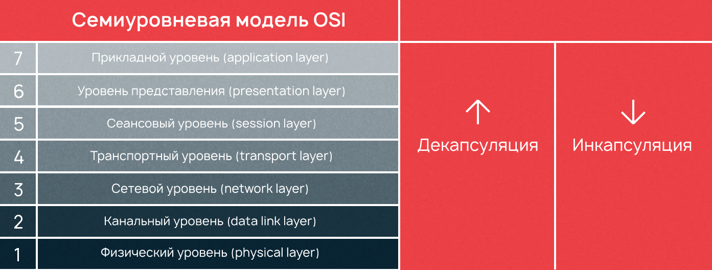

Модель OSI
- Принцип устройства сетевой модели
- Первый, физический уровень (physical layer, L1)
- Второй уровень, канальный (data link layer, L2)
- Третий уровень, сетевой (network layer, L3)
- Четвертый уровень, транспортный (transport layer, L4)
- Пятый уровень, сеансовый (session layer, L5)
- Шестой уровень, представления данных (presentation layer, L6)
- Седьмой уровень, прикладной (application layer)
- Вывод: роль модели OSI при построении сетей
Содержание
Принцип устройства сетевой модели
Сетевая модель OSI имеет семь уровней, иерархически расположенных от большего к меньшему. Cамым верхним является седьмой (прикладной), а самым нижним — первый (физический). Модель OSI разрабатывалась еще в 1970-х годах, чтобы описать архитектуру и принципы работы сетей передачи данных.
В процессе передачи данных всегда участвуют устройство-отправитель, устройство-получатель, а также сами данные, которые должны быть переданы и получены. С точки зрения рядового пользователя задача элементарна — нужно взять и отправить эти данные. Все, что происходит при отправке и приеме данных, детально описывает семиуровневая модель OSI.
На седьмом уровне информация представляется в виде данных, на первом — в виде бит. Процесс, когда информация отправляется и переходит из данных в биты, называется инкапсуляцией. Обратный процесс, когда информация, полученная в битах на первом уровне, переходит в данные на седьмом, называется декапсуляцией. На каждом из семи уровней информация представляется в виде блоков данных протокола — PDU (Protocol Data Unit).
Рассмотрим на примере: пользователь 1 отправляет картинку, которая обрабатывается на седьмом уровне в виде данных, данные должны пройти все уровни до самого нижнего (первого), где будут представлены как биты. Этот процесс называется инкапсуляцией. Компьютер пользователя 2 принимает биты, которые должны снова стать данными. Этот обратный процесс называется декапсуляция. Что происходит с информацией на каждом из семи уровней, как и где биты переходят в данные мы разберем в этой статье.
Первый, физический уровень (physical layer, L1)
Начнем с самого нижнего уровня. Он отвечает за обмен физическими сигналами между физическими устройствами, «железом». Компьютерное железо не понимает, что такое картинка или что на ней изображено, «железу» картинка понятна только в виде набора нулей и единиц, то есть бит.
Каждый уровень имеет свои PDU (Protocol Data Unit), представляемые в той форме, которая будет понятна на данном уровне и, возможно, на следующем до преобразования. Работа с чистыми данными происходит только на уровнях с пятого по седьмой.
Устройства физического уровня оперируют битами. Они передаются по кабелям (например, через оптоволокно) или без — например, через Bluetooth или IRDA, Wi-Fi, GSM, 4G и так далее.
Второй уровень, канальный (data link layer, L2)
Когда два пользователя находятся в одной сети, состоящей только из двух устройств, — это идеальный случай. Но что если этих устройств больше?
Второй уровень решает проблему адресации при передаче информации. Канальный уровень получает биты и превращает их в кадры (frame, также «фреймы»). Задача здесь — сформировать кадры с адресом отправителя и получателя, после чего отправить их по сети.
У канального уровня есть два подуровня — это MAC и LLC. MAC (Media Access Control, контроль доступа к среде) отвечает за присвоение физических MAC-адресов, а LLC (Logical Link Control, контроль логической связи) занимается проверкой и исправлением данных, управляет их передачей. Для упрощения мы указываем LLC на втором уровне модели, но, если быть точными, LLC нельзя отнести полностью ни к первому, ни ко второму уровню — он между.
На втором уровне OSI работают коммутаторы, их задача — передать сформированные кадры от одного устройства к другому, используя в качестве адресов только физические MAC-адреса.
На канальном уровне активно используется протокол ARP (Address Resolution Protocol — протокол определения адреса). С помощью него 64-битные MAC-адреса сопоставляются с 32-битными IP-адресами и наоборот, тем самым обеспечивается инкапсуляция и декапсуляция данных.
Третий уровень, сетевой (network layer, L3)
На третьем уровне появляется новое понятие — маршрутизация. Для этой задачи были созданы устройства третьего уровня — маршрутизаторы (их еще называют роутерами). Маршрутизаторы получают MAC-адрес от коммутаторов с предыдущего уровня и занимаются построением маршрута от одного устройства к другому с учетом всех потенциальных неполадок в сети.
Четвертый уровень, транспортный (transport layer, L4)
Четвертый уровень — это посредник между Host Layers и Media Layers, относящийся скорее к первым, чем к последним. Его главной задачей является транспортировка пакетов. Естественно, при транспортировке возможны потери, но некоторые типы данных более чувствительны к потерям, чем другие. Например, если в тексте потеряются гласные, то будет сложно понять смысл, а если из видеопотока пропадет пара кадров, то это практически никак не скажется на конечном пользователе. Поэтому при передаче данных, наиболее чувствительных к потерям на транспортном уровне, используется протокол TCP, контролирующий целостность доставленной информации.
Для мультимедийных файлов небольшие потери не так важны, гораздо критичнее будет задержка. Для передачи таких данных, наиболее чувствительных к задержкам, используется протокол UDP, позволяющий организовать связь без установки соединения.
При передаче по протоколу TCP данные делятся на сегменты. Сегмент — это часть пакета. Когда приходит пакет данных, который превышает пропускную способность сети, пакет делится на сегменты допустимого размера. Сегментация пакетов также требуется в ненадежных сетях, когда существует большая вероятность того, что большой пакет будет потерян. При передаче данных по протоколу UDP пакеты данных делятся уже на датаграммы. Датаграмма (datagram) — это тоже часть пакета, но ее нельзя путать с сегментом.
Главное отличие датаграмм — в автономности. Каждая датаграмма содержит все необходимые заголовки, чтобы дойти до конечного адресата, поэтому они не зависят от сети, могут доставляться разными маршрутами и в разном порядке. При потере датаграмм или сегментов получаются «битые» куски данных, которые не получится корректно обработать.
Первые четыре уровня — специализация сетевых инженеров. С последними тремя они не так часто сталкиваются, потому что пятым, шестым и седьмым занимаются разработчики.
Пятый уровень, сеансовый (session layer, L5)
Пятый уровень оперирует чистыми данными. Помимо пятого, чистые данные используются также на шестом и седьмом уровне. Сеансовый уровень отвечает за поддержку сеанса или сессии связи. Пятый уровень оказывает услугу следующему: управляет взаимодействием между приложениями, открывает возможности синхронизации задач, завершения сеанса, обмена информации.
Службы сеансового уровня зачастую применяются в средах приложений, требующих удаленного вызова процедур, т.е. чтобы запрашивать выполнение действий на удаленных компьютерах или независимых системах на одном устройстве (при наличии нескольких ОС).
Примером работы пятого уровня может служить видеозвонок по сети. Во время видеосвязи необходимо, чтобы два потока данных (аудио и видео) шли синхронно. Когда к разговору двоих человек прибавится третий — получится уже конференция. Задача пятого уровня — сделать так, чтобы собеседники могли понять, кто сейчас говорит.
Шестой уровень, представления данных (presentation layer, L6)
О задачах уровня представления вновь говорит его название. Шестой уровень отвечает за преобразование протоколов и кодирование/декодирование данных. Шестой уровень также занимается представлением картинок (в JPEG, GIF и т.д.), а также видео-аудио (в MPEG, QuickTime). А помимо этого → шифрованием данных, когда при передаче их необходимо защитить.
Седьмой уровень, прикладной (application layer)
Седьмой уровень иногда еще называют уровень приложений, но чтобы не запутаться можно использовать оригинальное название — application layer. Прикладной уровень — это то, с чем взаимодействуют пользователи, своего рода графический интерфейс всей модели OSI, с другими он взаимодействует по минимуму.
Все услуги, получаемые седьмым уровнем от других, используются для доставки данных до пользователя. Протоколам седьмого уровня не требуется обеспечивать маршрутизацию или гарантировать доставку данных, когда об этом уже позаботились предыдущие шесть. Задача седьмого уровня — использовать свои протоколы, чтобы пользователь увидел данные в понятном ему виде.
Вывод: роль модели OSI при построении сетей
В статье мы рассмотрели принципы построения сетевой модели OSI. На каждом из семи уровней модели выполняется своя задача. В действительности архитектура OSI сложнее, чем мы описали. Существуют и другие уровни, например, восьмой — так называют самого пользователя.
Как мы упоминали выше, оригинальное описание всех принципов построения сетей в рамках этой модели, если его распечатать, будет иметь толщину в один метр. Но компании активно используют OSI как эталон. Мы перечислили только основную структуру словами, понятными начинающим.
Модель OSI служит инструментом при диагностике сетей. Если в сети что-то не работает, то гораздо проще определить уровень, на котором произошла неполадка, чем пытаться перестроить всю сеть заново.
Зная архитектуру сети, гораздо проще ее строить и диагностировать. Как нельзя построить дом, не зная его архитектуры, так невозможно построить сеть, не зная модели OSI. При проектировании важно учитывать все. Важно учесть взаимодействие каждого уровня с другими, насколько обеспечивается безопасность, шифрование данных внутри сети, какой прирост пользователей выдержит сеть без обрушения, будет ли возможно перенести сеть на другую машину и т.д. Каждый из перечисленных критериев укладывается в функции одного из семи уровней.